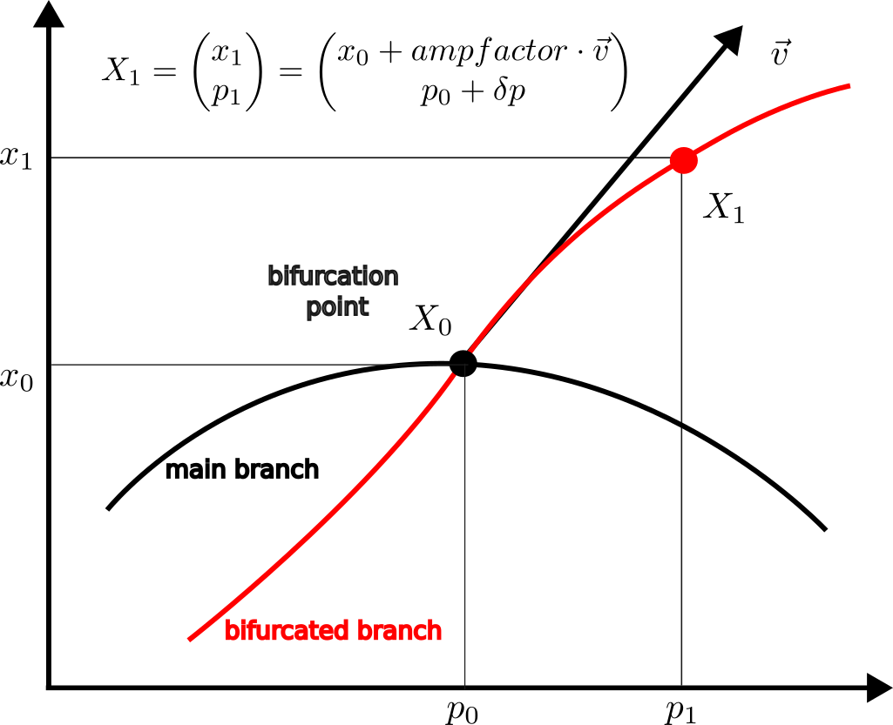

Branch switching
The precise definition of the methods is given in Branch switching (branch point) and Branch switching (Hopf point).
(Automatic) branch switching of simple bifurcation points
Unlike other continuation softwares (Auto07p, MatCont, pde2path), BifurcationKit has methods for automatic branch switching where the user is only asked to provide the parameter distance from a point on the bifurcated branch to the bifurcation point. Let us explain this in more detail using the following figure.

Knowing a bifurcation point $X_0 = (x_0,p_0)$ on a branch br, we want to find the bifurcated (red) curve. To this, we need an initial guess $X_1$ on the bifurcated curve. Usually, the tangent $\vec v$ can be found which leaves two parameters δp, ampfactor to be determined. Note that both parameters needs to be small. For example, the default values are δp = ds (ds is in ContinuationPar ) and ampfactor = 0.1.
- In case of manual branch switching, the user is asked to provide the couple
δp, ampfactor. This can be tricky because minute errors inδp, ampfactorcan imped newton correction. This is for example used in Lur'e problem for period-doubling with Trapezoid method. Thus, the general method is like
continuation(br, ind_bif, options_cont;
δp = 0.1, ampfactor = 0.1,
kwargs...)- In case of automatic branch switching, the user is only asked to provide
δpwhileampfactoris internally estimated using the normal form of the bifurcation point. When the user does not passδp, the value ofdsis inContinuationParis used. Thus, the general method is like
continuation(br, ind_bif, options_cont; kwargs...)When the bifurcation diagram is very stiff, automatic branch switching may fail (for example BifurcationKit could return ampfactor=1e6 or ampfactor = 1e-10). In this case, one can override automatic branch switching and specify δp, ampfactor directly as for manual branch switching using
continuation(br, ind_bif, options_cont;
δp = 0.1, ampfactor = 0.1,
override = true,
kwargs...)Manual branch switching is automatically used by BifurcationKit when the normal form of the bifurcation point is not implemented (like PD normal form for Trapezoid method). You can force BifurcationKit to use it using the override key word.
Branch switching of non-simple bifurcation points
We refer to Branch switching for more details.
Graph of bifurcations
We provide a graph of bifurcations of equilbria and periodic orbits that can be detected in BifurcationKit. An arrow from say Equilibrium to Hopf means that Hopf bifurcations can be detected while continuing equilibria. Each object of codim 0 (resp. 1) can be continued in one (resp. 2) parameters.
Summary of branching procedures
We collect in the following table the list of automatic branch switching (aBS) functions. Their detailed explanation follows in this page.
| function | ind-th bif. point | Type T | description |
|---|---|---|---|
continuation(br::ContResult{T}, ind::Int; kw...) | :bp, :nd | EquilibriumCont | aBS from equilibria to equilibria |
continuation(br::ContResult{T}, ind::Int, lens2::Lens; kw...) | :bp, :hopf | EquilibriumCont | Fold/Hopf continuation w.r.t. parameters getlens(br) and lens2 |
continuation(br::ContResult{T}, ind::Int; kw...) | :bt,:zh,:hh | FoldCont,HopfCont | switch to Fold/Hopf continuation from Hopf/Fold w.r.t. parameters of codim 2 br |
continuation(br::ContResult{T}, ind_hopf::Int, ::ContinuationPar, prob::AbstractPeriodicOrbitProblem) | :hopf | EquilibriumCont | Branch switching from Hopf point to periodic orbits |
continuation(br::ContResult{T}, ind::Int, kw...) | :bp,:pd | PeriodicOrbitCont | Branch switching from Branch / Period-doubling point of periodic orbits to curve of periodic orbits |
continuation(br::ContResult{T}, ind::Int, kw...) | :gh,:zh,:hh | TwoParamCont | Branch switching from Bautin / Zero-Hopf/ Hopf-Hopf point to curve of Fold/NS of periodic orbits |